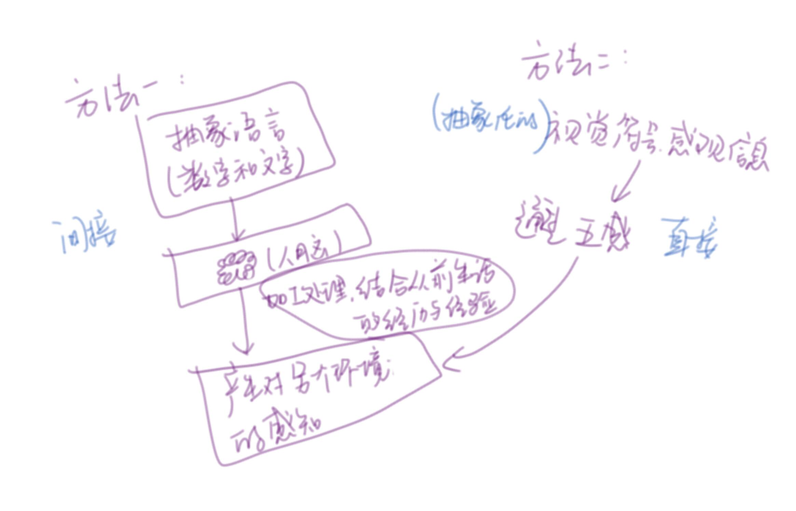

Credit：minryungson
Your weather
"A real-time light projection installation
In our daily lives, weather and light patterns affect our routines much more thant we realize. In my own experience, for example, I find it difficult to truly sense the weather outside of the building during the day because I spend most of my time working in my studio. Even though I use a weather app that provides temperature, wind direction, wind speed and humidity, the numbers in the app dont really help me to understand weather. Weather obtains our experiences based on the quality of the object or the event."
Orbit-Table-Clock
Waves in Equilibrum
⭐关于毛茸茸的前期fuzzy front end
如果一定要说的话……可以结合目前新兴的、有扩展趋势的人群：异地恋人群或独居人群。 可以从全球化迁徙、工作导向的生活方式、他们深层次的心理特征、未能满足的心理需求、情感状况、占有欲、x生活、以及相应的设计机会点……等等来分析。 潜在使用人群是所有的想了解某个地方状况的人群。
⭐关于想要表达的
I insists that the time and weather cannot be separatly deliverd to people depriving from its material representation and vice versa
我认为 时间与天气信息的传递 是一个非常私人的过程，与用来表达它的媒介息息相关，反之亦然。 抛开市面上关于时间/天气的一万种UI尝试，我想将信息的容器跳出屏幕，将日常生活中的可触摸、可感受的物体转化成这样的容器。使用户不再需要经历接受文字信息、转化文字信息这样冗长复杂的过程，取而带之的是物理媒介带来的独特的、关于感官的流畅体验。

从 最初的有好感、喜爱、关心 到想要占有某个人，想要掌握ta的一切。每个人都是独一无二的，因此导致了亲密关系的发展总是有这样那样的复杂性(intricacies)与不确定性，这种风险尤其存在于相互交流与信息交换的过程中。
异地关系通常有着更高的沟通成本。人们会更缺乏安全感，从而更频繁的去试探对方。 我想做的物件可以满足关系中某一方的单向的占有欲，它可以使你感到被联系着的(feel connected), 感到事情是被掌控着的
从而降低非必要沟通的频率，降低误会的风险，或者引发相反的效果……
举个通俗的例子子子,平行时空中的感同身受 empathyyyy
Q1:What is the difference between numbers on screen and a physical, real object?
物理的、真实存在的物件与屏幕上的数字究竟有什么不同
Q2:How is the object different from a clock or a timer app?
这个物件究竟与钟表与计时器 有什么不同的地方
Q3:How can we leverage what our perception towards time/weather to create something unique to its medium?
我们将如何利用人类对天气(或者时间)的感知 来创造更独特的、忠于它的形式的物件
心知天气 ： 温度📍 | 风速 | 能见度 | 气压 💧| 以及各种各样的天气状况☔
1 温度 ： 将 地点的温度 直接反应成 被控制物体的温度 即你可以直接用手、用直观的触觉去感受这个温度 | 或者感温变色材料 (淘宝有感温变色粉)
2 风 ：🌊 水波的运动 | 悬挂物的运动：竹蜻蜓，风车
3 能见度：利用电子烟雾化器在相对密闭的容器内参数化模拟能见度..
4 天气： LED灯 的颜色、暗弱 对应一系列天气
5 靠球体的运动来模拟潮汐
大尺度时间：月相（https://www.youtube.com/watch?v=ywwnBmXpnzE,居然已经被做出来了）, 日地月之间的关系
小尺度的时间：日晷,光照,铜壶滴漏，水钟（蜡烛钟）同一类
经纬度
城市的形状
球体🌍
岛屿
透明的盒子⬓
瓶子⋈
位置点(类似于地图的定位)▼
头顶的竹蜻蜓…
腰带的温度
手镯的软硬
衣服的温度颜色
帽子的颜色